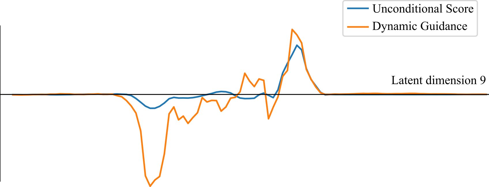
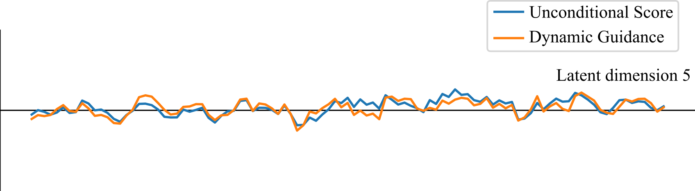
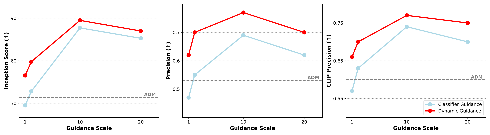

Mitigating Diffusion Model Hallucinations with Dynamic Guidance
Under Review
Overview
Recent findings have shown that the learned score function \( s_\theta(x_t)\) in DDPMs tends to be overly smooth in the low-density regions between modes. This lack of “sharpness" can effectively trap samples during denoising, a problem particularly pronounced by few-step sampling, where the denoiser cannot leap across these smooth regions. The resulting samples end up as interpolations between those modes, which might be “hallucinations" depending on the semantic relationship between the specific modes involved.
Since semantic interpolations are often desirable and contribute to sample diversity, we require a targeted solution to address diffusion model hallucinations.
We propose Dynamic Guidance, a simple yet effective guidance algorithm that adaptively sharpens the learned score function along the sampling trajectory.
Dynamic Guidance
Core insight: We can identify potential modes \(c^*\) that a sample is naturally gravitating towards during the sampling process for a given condition \(y\), and use the score function of the locally sharper conditional distribution \(p(x|y,c^*)\) rather than the overly-smooth \(p(x|y)\) or an attenuated \( p(x|y,c) \) from a distant mode.
1. Identify modes: First identify (manually or automatically) an appropriate set of mode labels \(\mathbb{C}\) whose interpolations correspond to the defined hallucinations.
2. Dynamic Guidance: Apply guidance dynamically, without fixing the guidance target/condition at the beginning of the sampling process. At each timestep, we identify the mode with the maximum probability given the current noisy sample \(x_t\). and perform the sampling step by applying guidance using the selected mode. We essentially calculate a sharper approximation of the score function:
\[ \hat s_{\theta}(\bm{x}_t) := \sum_c \mathbbm{1}_{c^*}(c) \nabla_{\bm{x}_t}\log p_\theta(\bm{x}_t \mid c), \quad c^* = \argmax_{c\in \mathbb{C}} \log p(c | \bm{x}_t). \]By recalculating the most probable class at each timestep, we ensure that the guidance signal remains aligned with the local score direction and adapts to the sample's evolving trajectory.
Visualization of score function in latent space
We train a diffusion model on a dataset of images that contain up to 1 instance of 3 different shapes; We pick an initial image that contains two different shapes (triangle + pentagon), which is a hallucination for this dataset. We identify a latent dimension that controls the appearance of the left shape (latent dimension 9). To resolve the hallucination, the pentagon on the left should disappear or turn into a triangle. In the in-between region, where the left shape is square or pentagon, the unguided score function is zero, “trapping" the sample and generating a hallucination. Dynamic Guidance sharpens the score in this region, steering the sample toward valid images that only contain triangles. Hover over points to see the image for different values of latent dimension 9.

Hover over a point
Dynamic Guidance does not affect the score function along dimensions that are unrelated to hallucinations, like the one controlling the position of the shape on the right (latent dimension 5). Hover over points to see the image for different values of latent dimension 5.

Hover over a point
Dynamic Guidance improves ImageNet generation

Dynamic Guidance for Text-to-Image generation
Click any image to swap between Baseline SD 2.1 (red border) and Dynamic Guidance (green border). Hover to see annotations.
BibTeX
@article{triaridis2025mitigating,
title={Mitigating Diffusion Model Hallucinations with Dynamic Guidance},
author={Triaridis, Kostas and Graikos, Alexandros and Chatziagapi, Aggelina and Chrysos, Grigorios G and Samaras, Dimitris},
journal={arXiv preprint arXiv:2510.05356},
year={2025}
}